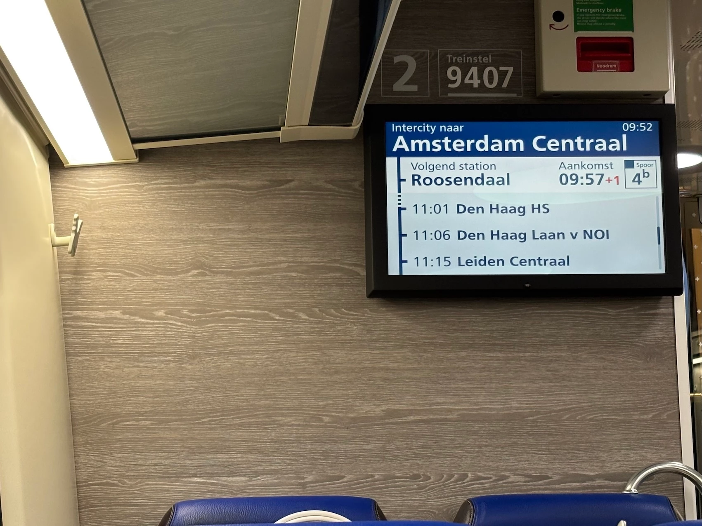
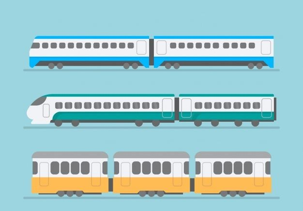
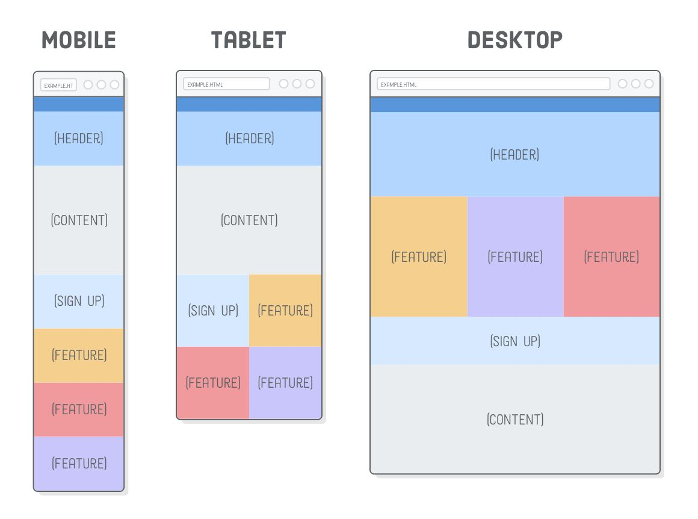
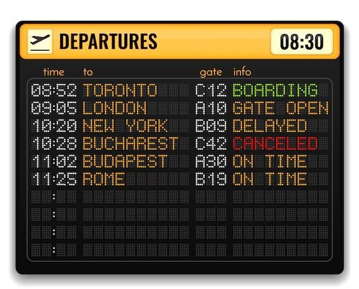

Week 2
Research :
- Reisinformatie: Dienstregelingen, vertrektijden, bestemmingen, tussenstops, vertragingen.
- Kleurpalet -> Blauwtinten ( dominant aanwezig ), wit ( tekst ), rood ( waarschuwingen of belangrijke info ).

- Typografie -> Duidelijke, leesbare lettertypen.

- Pictogrammen -> Eenvoudige, universele symbolen voor verschillende diensten en faciliteiten.
- Layout -> Overzichtelijke indeling met duidelijke hiërarchie van informatie. Gebruik van secties en kaders om verschillende soorten info te scheiden.

Mijn moodboard / ideeën :
- Gebruik van pictogrammen voor snelle herkenning van informatie.
- Simpel ontwerp met focus op functionaliteit en gebruiksvriendelijkheid.

- Responsive design zodat info op verschillende schermformaten goed leesbaar is.

- Real-time updates over vertragingen en wijzigingen in de dienstregeling.
- Duidelijke kleurcodering voor verschillende soorten informatie ( bv. groen voor aankomst, oranje voor vertraging, rood voor afgelast ).
